Oddjob is the network.
Oddjob makes working with jobs on a remote server virtually transparent.
Here's a a world according to Oddjob:
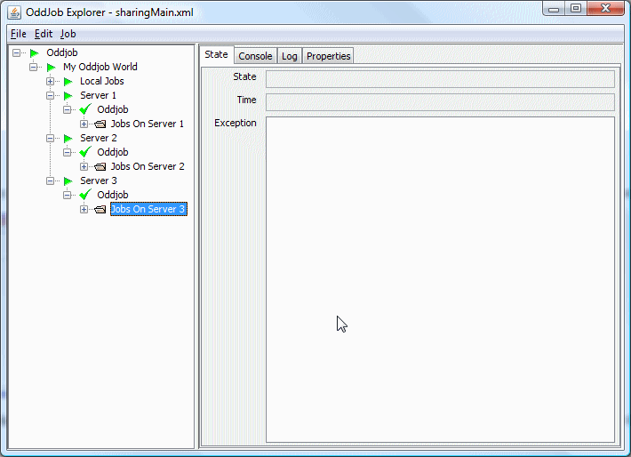It has local jobs but also has connections to three servers running anywhere on the network.
Setting up Oddjob for sharing is easy. Create an Oddjob for your view of the world and add a client job for each server you want to connect to. When the client runs all the server jobs magically appear. They aren't quite real though, they are only reflections of the server jobs.
If we stop the client, the reflected server jobs disappear, but they are still running on the server.
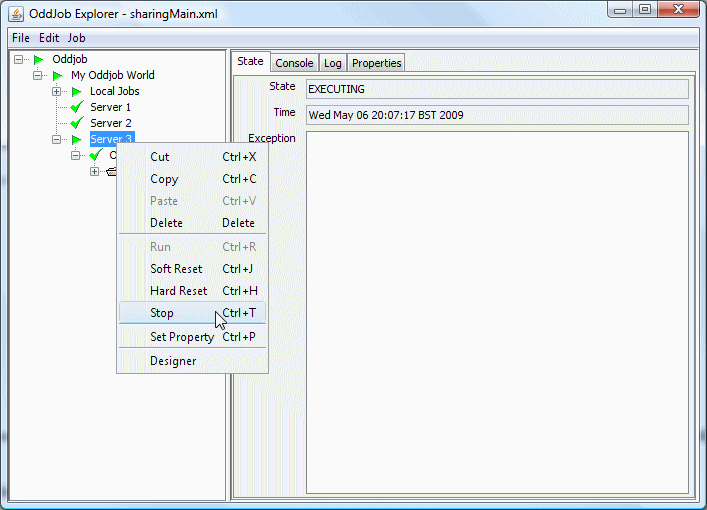Here, the client jobs named Server 1 and Server 2 have been stopped and the client job named Server 3 is about to be stopped.
Working with the local reflection of a remote job is no different to working with a local job except that the action takes place on the server.
Lets work through some examples, but as I'm not going to explain
how to set up servers until you're completely persuaded by the magic of sharing
you might wish to work with one I created earlier. It's in the
examples/userguide directory and it's called sharingMain.xml.
Open and run it in Oddjob explorer, and if you're on Windows you will
something like this:
Three console windows will appear, which are the 3 server processes. If
they don't appear then you might need to change the runnOddjob
property in the variables. If you are not on windows, you will also have to
change the three ExecJob configurations.
Lets run a job on Server 1. Run the client called Server 1 and expanded the job tree to see the jobs we've got on Server 1. Ignore the Server 2 and Server 3 jobs (they are for later) but run the Job 'Echo To Console'.
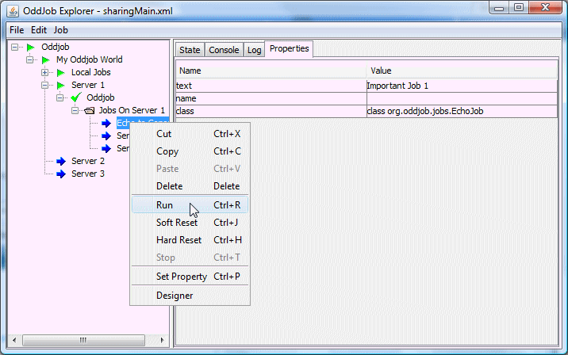Now take a look at the console window for Server 1.
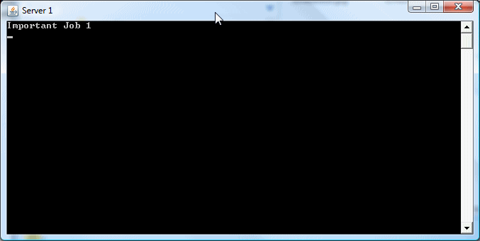Oddjob reflects the console of the server locally.
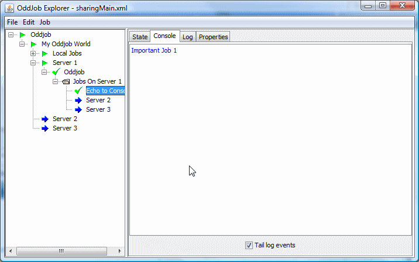And also the Log output for the server job is reflected locally. These features make supporting applications on remote servers much easier.
Resetting and Stopping jobs work just as transparently. So does setting a property.
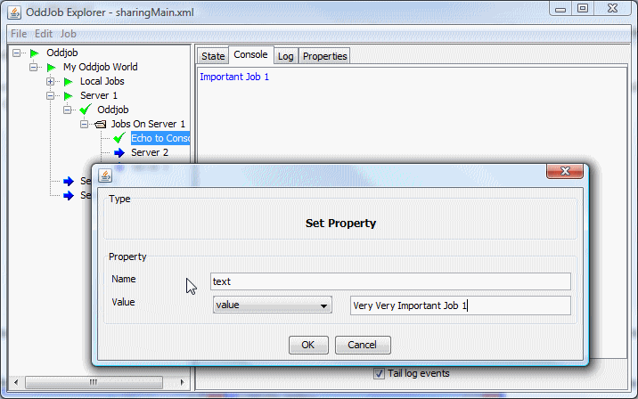And the proof...
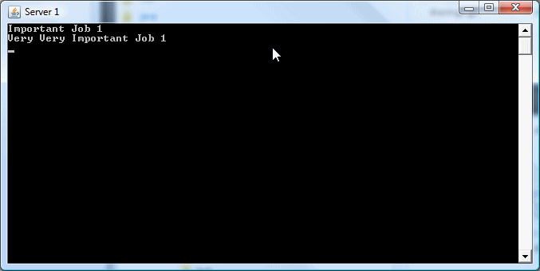Setting a property is only temporary, if the server is restarted the configured value is reused. If the configured value was a runtime property (in ${} form) the runtime property will be reset when the job is run. Fortunately oddjob allows you to permanently change the remote configuration as well.
Oddjob Makes configuring remote jobs wonderfully simple too. Lets start our client to Server 2 and drag our Important Job 1 to Server 2.
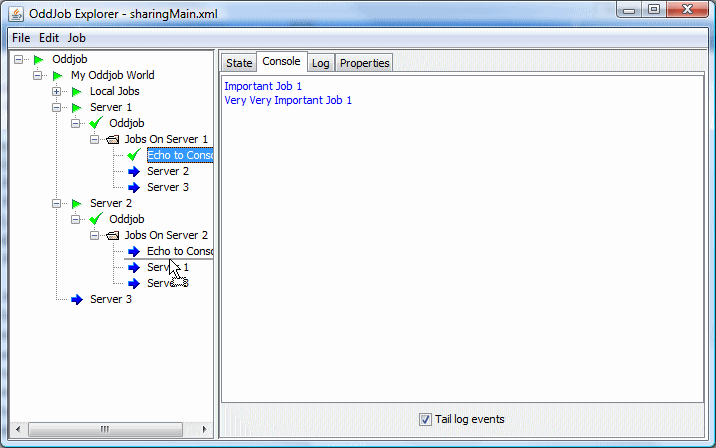And run it.
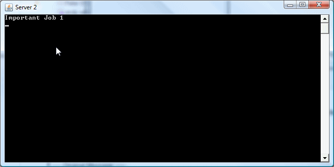And configure it.
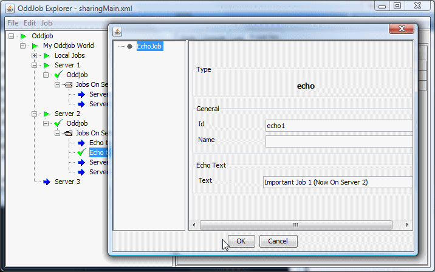And run it again.
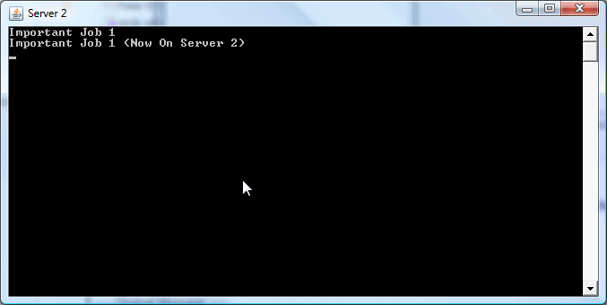You Try...
Now stop having fun and pay attention because this is really important. What we are changing is an in memory copy of the configuration on the server. If you restart the server then this configuration is lost. To save this back to the configuration file on the server you must have any job in that configuration selected, and then select save from the menu.
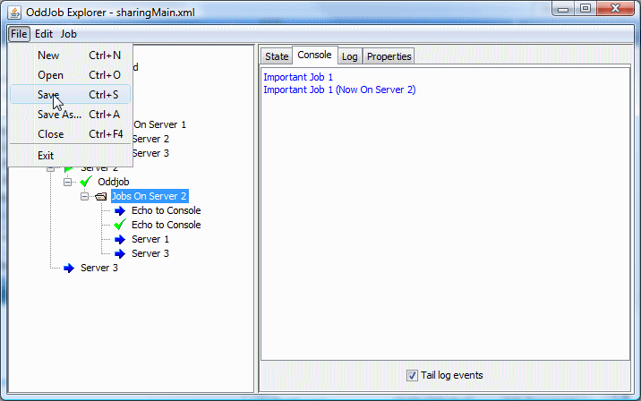Now the file sharingJob2.xml has the changes.
<oddjob xmlns:jmx="http://rgordon.co.uk/oddjob/jmx">
<job>
<folder name="Jobs On Server 2">
<jobs>
<echo id="echo2" text="Important Job 2"/>
<echo id="echo1" text="Important Job 1 (Now On Server 2)"/>
<jmx:client id="server1" name="Server 1" url="service:jmx:rmi:///jndi/rmi://localhost/oddjob-server-1"/>
<jmx:client id="server3" name="Server 3" url="service:jmx:rmi:///jndi/rmi://localhost/oddjob-server-3"/>
</jobs>
</folder>
</job>
</oddjob>
Now I admit that having Save associated with the file menu, not the job menu, and having no warning that configuration has changed, and not knowing if someone else has changed the configuration isn't great. But this will be fixed soon. I promise.
Now just to counter those slight negative vibes you might be getting - let me point out one cool feature about nested Oddjobs. When you create new nested Oddjob, the nested Oddjob's configuration file will be created on the server, (when you save that nested Oddjob) No server access required! .
Clients and Servers can be linked together to enable jobs to be visible across several servers:
This is achieved simply by adding a client job to the server configuration. What we've got in our example is this:
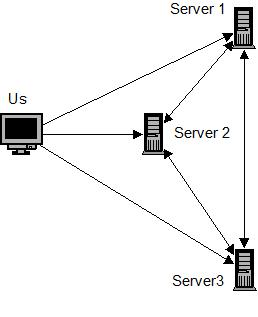So we (Us) have access to all three servers directly, but each server has access to the other two servers. Lets see how that looks in Oddjob Explorer.
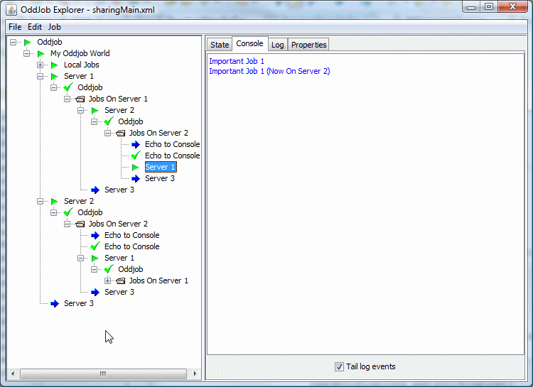We're now seeing Server 2 via Server 1, including it's console output. The same complete server transparency but across multiple servers.
The server has built in loop back detection to detect the situation when a client loops back to the originating server. The Server 1 client on Server 2 no longer shows any children when viewed from our original Server 1 client. If you're confused, I'm talking about the selected Job in the picture above.
Accessing a remote job and it's properties from a configuration file is a virtually seamless transition from working with a nested Oddjob job. A job is accessible using the notation ${client-id/id-of-job-on-server}.
Setting up Oddjob as a server is easy too. First the really easy way.
Oddjob comes packaged with a server.xml and a client.xml file. Run the server.xml and you have a server.
java -jar run-oddjob.jar -f server.xml
Connect to server by opening client.xml in Oddjob Explorer and start configuring...
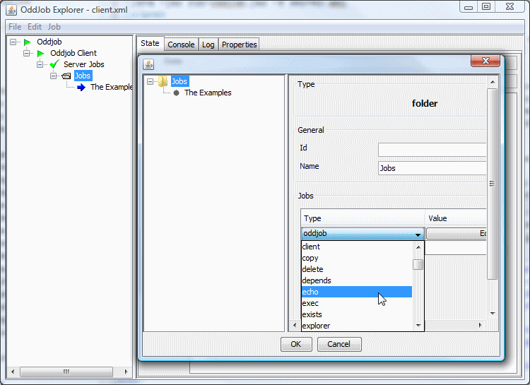To understand what's going on let's take a look at the server.xml.
{@oddjob.xml.file ../oddjob/server.xml}The job that provides the sharing functionality is the server job. This job shares the local jobs from the given root job down. In this case the root job is a nested Oddjob called Server Jobs.
The server uses JMX (Java Management Extensions) which you don't need to know anything about except that the JMX protocol our server is using requires an RMI registry to be running somewhere, and we ensure this is the case by running one ourselves via the preceding rmireg job. If an RMI server is already running on our machine, our Registry Job will silently complete. The URL is the only other confusing thing and that becomes less confusing when you know that all you need to worry about is the last path element which is the name the server will be registered by in the registry and must be unique for each server job on each machine.
For those that would like to know more about JMX and the URL format it's in The JMX Specification, but for those that aren't too bothered by how it works - just cut and paste.
There is no limit to the number of server jobs you have in an Oddjob configuration or which jobs they share. A server could share a folder that contains itself allowing the client to shut it down. A master or administrator server could share several child servers, perhaps running jobs for different departments. In this respect the server job is very flexible.
One caveat about remote configuration. Oddjob can share any job and it's children, but configuration will only work from an Oddjob node down. That is why the first node to be shared will often be an Oddjob job.